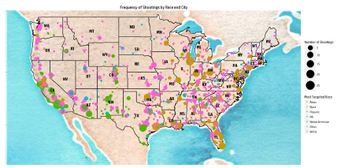

Projects
STA 141B Final Project
By extracting informations from Yelp API, we provide the user a travel guide in California. In the project, we will display the best restuants, hotel, and landmarks with interactive plots and give a general analysis of the reviews by using word processing. We also created interactive inputs for the user so that they can look for what they want more specifically.
Read more
Statistical Data Analysis on fatal police shootings in the US The Washington Post Fatal Police Shooting dataset from a Github database on all shootings in which a police officer, in the line of duty, shot and kill a civilian in the United States in 2015 and 2016. By exploring the dataset, we found the correlations between the variables and created plots for vistualization.
Read more